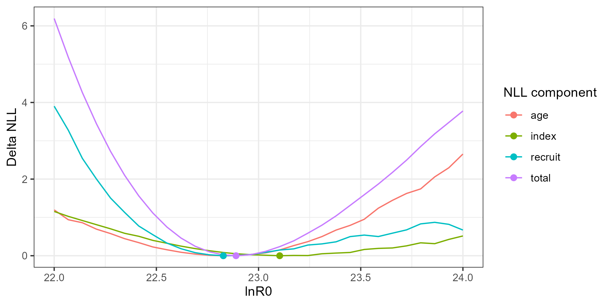
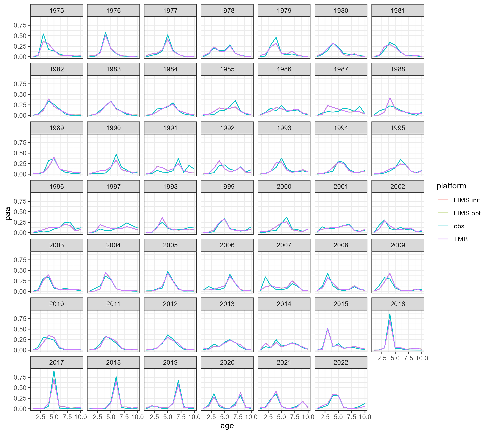
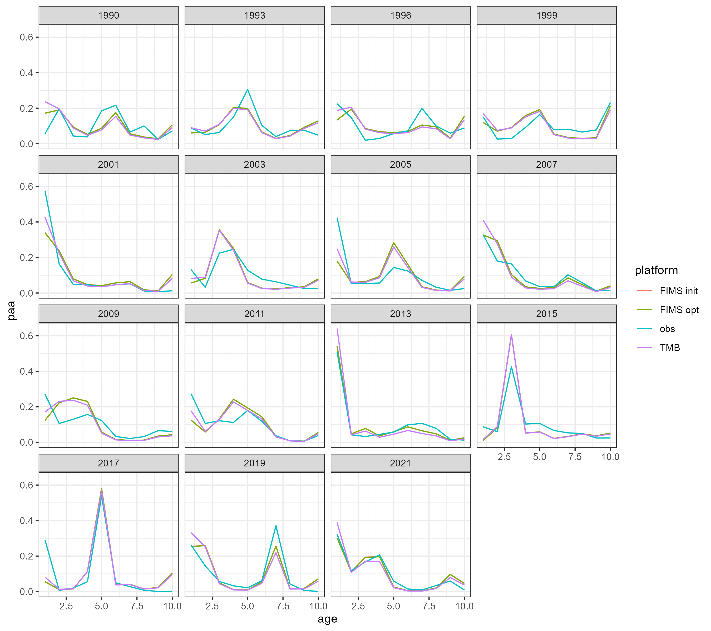
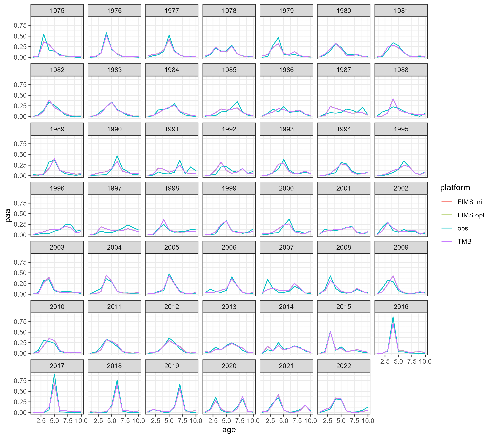
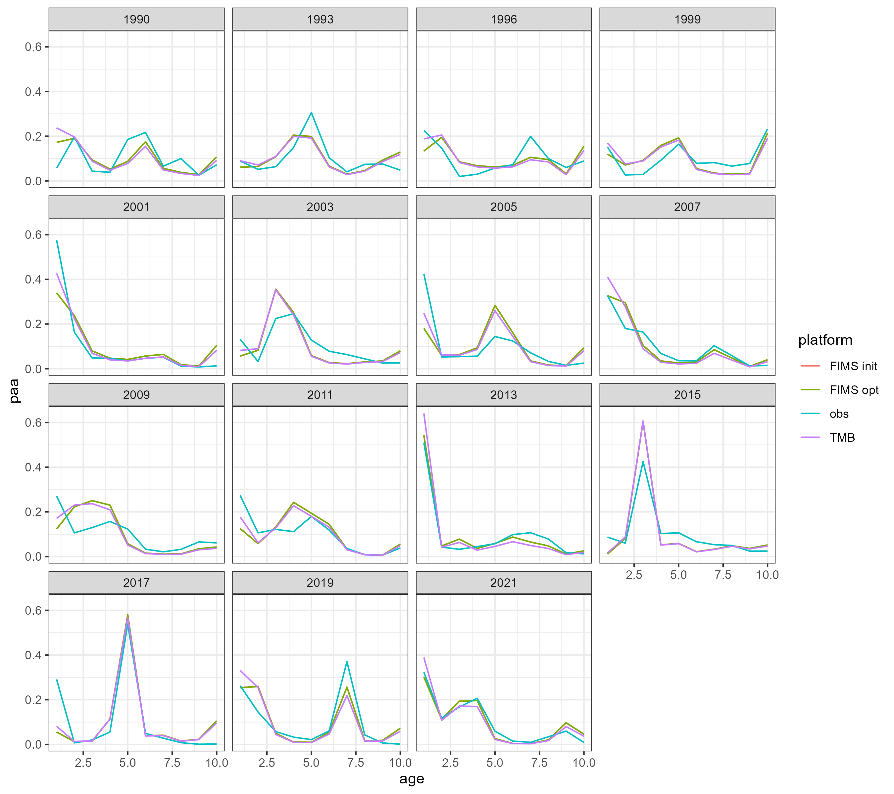

The model presented in this case study was changed substantially from the operational version and should not be considered reflective of the pollock stock. This is intended as a demonstration and nothing more.
To get the opertional model to more closely match FIMS I:
Droped surveys 1, 4, and 5
Removed ageing error
Removed length compositions
Removed bias correction in log-normal index likelihoods
Simplified catchability of survey 3 to be constant in time (removed random walk)
Updated maturity to be parametric rather than empirical
Used constant weight at age for all sources: spawning, fishery, surveys, and biomass calculations. The same matrix was used throughout.
Changee timing to be Jan 1 for spawning and all surveys
Removed age accumulation for fishery age compositions
Script to prepare data for building FIMS object
Code
## define the dimensions and global variablesyears <-1970:2023nyears <-length(years)nseasons <-1nages <-10ages <-1:nages## nfleets <- 1## This will fit the models bridging to FIMS (simplifying)## source("fit_bridge_models.R")## compare changes to modelpkfitfinal <-readRDS("data_files/pkfitfinal.RDS")pkfit0 <-readRDS("data_files/pkfit0.RDS")parfinal <- pkfitfinal$obj$env$parList()pkinput0 <-readRDS('data_files/pkinput0.RDS')fimsdat <- pkdat0 <- pkinput0$datpkinput <-readRDS('data_files/pkinput.RDS')
Two extra analyses are demonstrated. First is a likelihood profile over lnR0, showing component contributions and testing for data conflict (a Piner plot). The second is to run the model through the ‘Stan’ software using the ‘tmbstan’ R package. This samples from the posterior, which are put back into the model to get the posterior distribution for spawning stock biomass. Given its long run time the results are saved to a file and read in for post-hoc plotting.
Code
## Try a likelihood profilei <-68# this will break if model is changed at allmap <- parametersmap$p[i] <-NA# map off R0 specified belowmap$p <-as.factor(map$p)xseq <-as.numeric(c(opt$par[i], seq(22,24, len=30)))res <-list()for(j in1:length(xseq)){print(j) parameters$p[i] <- xseq[j] obj2 <-MakeADFun(data =list(), parameters, DLL ="FIMS", silent =TRUE, map=map) opt2 <- TMBhelper::fit_tmb(obj2, getsd=FALSE, newtonsteps=0, control=list(trace=0)) out <- obj2$report() res[[j]] <-data.frame(j=j, lnR0=xseq[j], total=out$jnll, index=out$index_nll,age=out$age_comp_nll,recruit=out$rec_nll, maxgrad=max(abs(obj$gr())))}res <-bind_rows(res) %>%pivot_longer( cols=c(total, index, age, recruit)) %>%group_by(name) %>%mutate(deltaNLL=value-min(value))g <-ggplot(res, aes(lnR0, deltaNLL, color=name)) +geom_line()g <- g+geom_point(data=filter(res, deltaNLL==0), size=2) +labs(y='Delta NLL', color='NLL component')ggsave('figures/AFSC_PK_like_profile_R0.png', g, width=7, height=3.5)## ## Try Bayesian## library(tmbstan)## library(shinystan)## ## Some paraemters wandering off to Inf so fix those (need## ## priors). Needs a ton of work but is proof of concept. Major## ## problem is parallel fails.## map <- parameters## ## parameters$p[65:66]## map$p[65:66] <- NA # map off R0 specified below## map$p <- as.factor(map$p)## obj3 <- MakeADFun(data = list(), parameters, DLL = "FIMS", silent=TRUE, map=map)## opt3 <- TMBhelper::fit_tmb(obj3, getsd=FALSE, newtonsteps=0, control=list(trace=0))## ## Fails when trying to do this in parallel unfortunately## fit <- tmbstan(obj3, chains=1, cores=1, open_progress=FALSE,## init='last.par.best', control=list(max_treedepth=10))## launch_shinystan(fit)## df <- as.data.frame(fit)## df <- df[,-ncol(df)] # drop lp__## ## for each posterior draw, report to get SSB## postreps <- list()## for(ii in 1:nrow(df)){## if(ii %% 10==0) print(ii)## postreps[[ii]] <- obj3$rep(df[ii,])## }## ssbpost <- lapply(postreps, function(x) data.frame(year=years, ssb=x$ssb[[1]][-55]))%>%## bind_rows %>% mutate(rep=rep(1:nrow(df), each=54))## saveRDS(ssbpost, file='pk_SSB_posteriors.RDS')ssbpost <-readRDS('data_files/pk_pollock_SSB_posteriors.RDS')g <-ggplot(ssbpost, aes(year, ssb/1e9, group=rep)) +geom_line(alpha=.1) +ylim(0,NA) +labs(x=NULL, y='SSB (M t)', title='Posterior demo (unconverged!)')ggsave('figures/AFSC_PK_ssb_posterior.png', g, width=7, height=4, units='in')
Plots for extra analyses

Comparison table
The likelihood components from the TMB model do not include constants and thus are not directly comparable. To be fixed later. Relative differences between the modified TMB model and FIMS implementation are given in the figure above.
What was your experience using FIMS? What could we do to improve usability?
To do
List any issues that you ran into or found
Output more derived quantities like selectivity, maturity, etc.
NLL components are not separated by fleet and need to be. So age comp NLL for fleets 1 and 2 need to be separate to make, e.g., the likelihood profile plot above.
Need more ADREPORTed values like SSB
What features are most important to add based on this case study?
More sophisticated control over selectivity so that ages 1 and 2 can be zeroed out for a double-logistic form, overriding the selectivity curve.


  
 